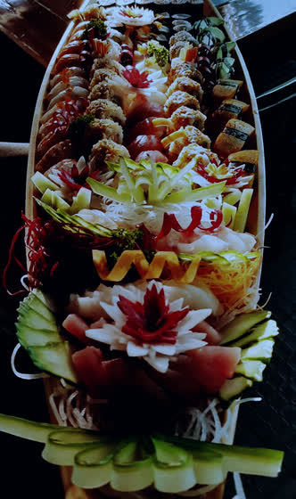
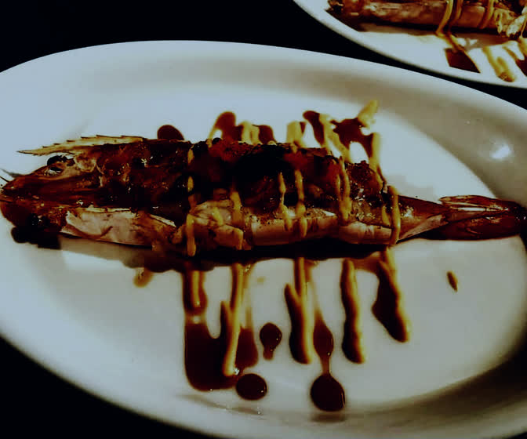
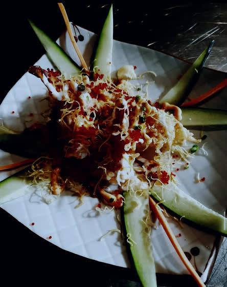
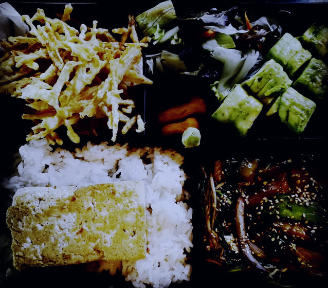
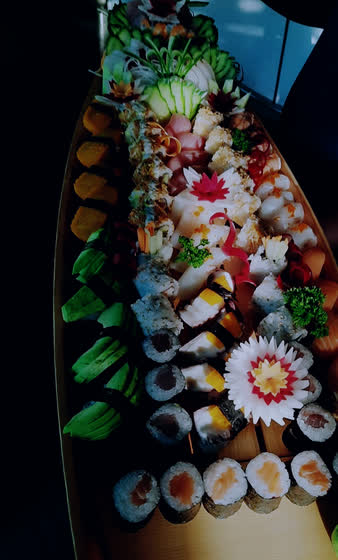
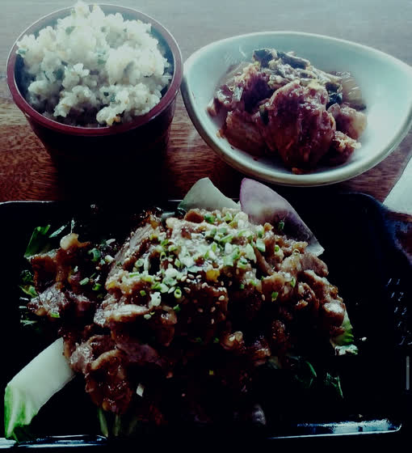

Misono
The art of Japanese dining
A unique experience
Discover a symphony of flavors where ancient traditions meet modern artistry. Each dish is a curated masterpiece, designed not just to be eaten, but to be felt.






Omakase, entrusted
Omakase means to entrust. Place the evening in the chef's hands and it is returned one course at a time, each shaped by what the coast offered that morning.
Cut with intention
A single cut decides everything that follows — how the fish sits, how it yields, how it finishes. Nothing that reaches the counter was improvised.